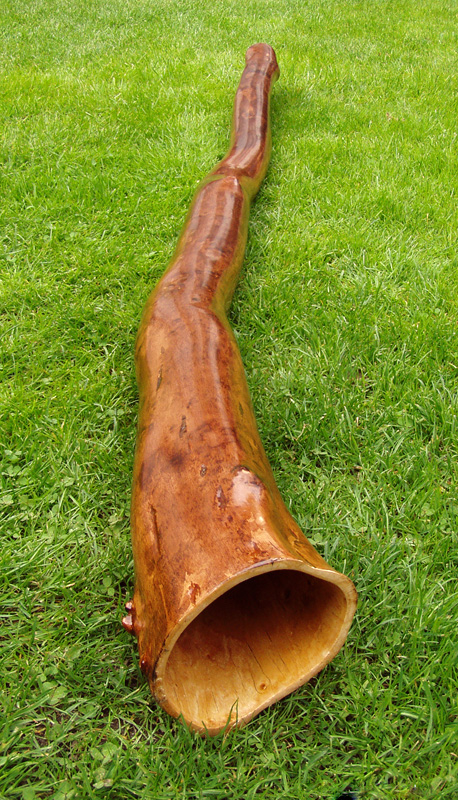
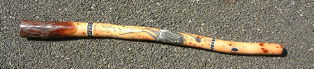
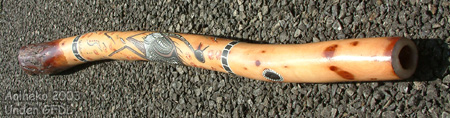

Natúr didgeridoo

Természetes formájú fa hangszer.
- Anyaga: fa
- Színe: barna
- Ár: 19 900 Ft
Hangszerek, Workshopok, Érdekességek
A didgeridoo egy különleges fúvós hangszer. Mély hangját az ajkak rezgésével lehet megszólaltatni.

Természetes formájú fa hangszer.

Festett mintákkal díszített hangszer.

Díszített Didgeridoo gyakorláshoz.